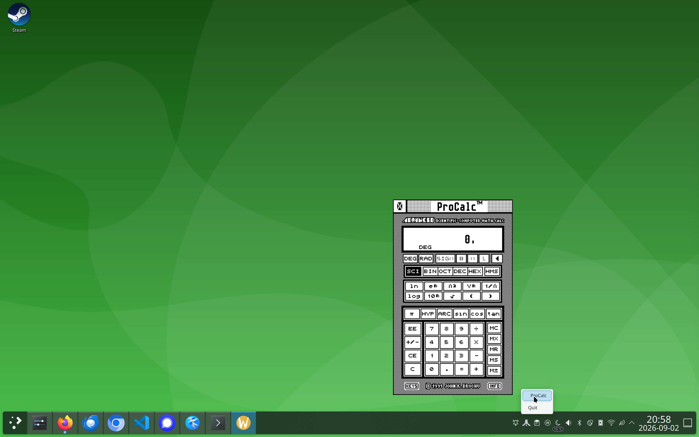
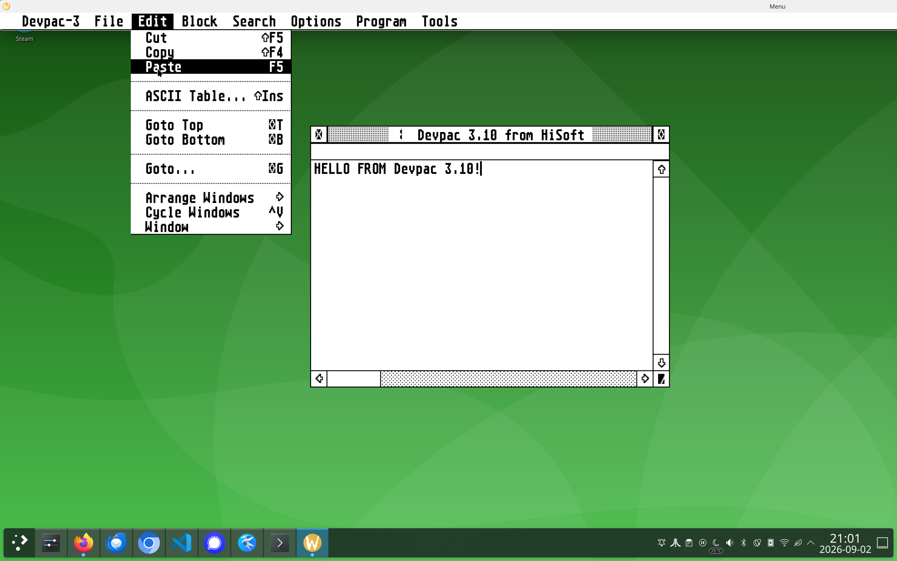
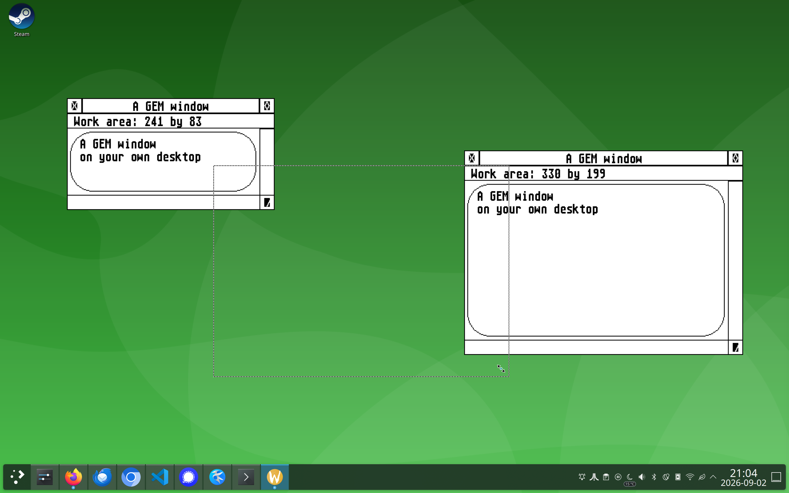
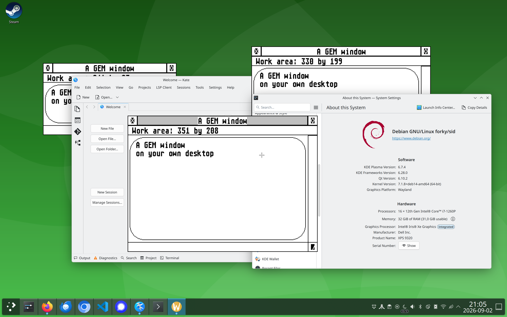
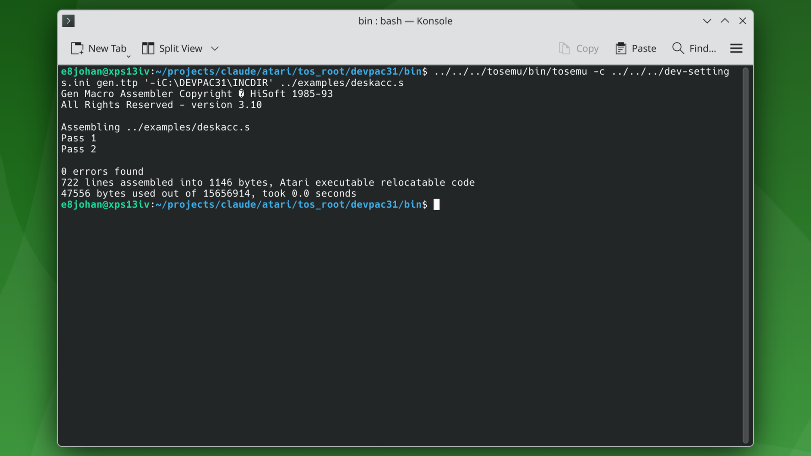

What it is
TOSEMU runs programs written for the Atari ST — GEM applications, assemblers, compilers, desk accessories — on a modern Linux machine. The 68000 code is executed by an emulated CPU, because that part cannot be avoided. Everything around the CPU is not emulated at all: when the program asks the operating system to open a file, draw a line or put up a window, that request is intercepted and carried out by the host.
The result is that an ST application behaves like any other program you have installed. It reads your files, it takes arguments from your shell, and its windows sit alongside your browser and your terminal on the same desktop.
Why it is not a classical emulator
A classical emulator — Hatari, STeem, MiST — recreates the machine. It loads a TOS ROM image, emulates the video shifter, the sound chip, the floppy controller and the keyboard, and shows you the machine's screen inside a window. What you get is an Atari ST, faithfully, in a box. Everything inside the box is Atari; everything outside it is your computer; and the only way across is a disk image.
TOSEMU takes the other route, the one Wine takes for Windows: emulate the instruction set, and reimplement the operating system.
A classical emulator
- Needs a TOS ROM image to boot
- Emulates the hardware: shifter, MFP, FDC, ACIA
- One window containing a whole screen
- Files live in a disk image you mount
- The desktop inside is the Atari desktop
TOSEMU
- No ROM: GEMDOS, BIOS, XBIOS and the AES are reimplemented
- Emulates only the CPU; the rest is translated to host calls
- One real window per GEM window, dialog and menu
C:is your file system, as it is- The desktop is your desktop
That last point is the one worth dwelling on. GEM lays out its windows in an emulated screen — a coordinate space and a block of memory — because that is what a GEM application expects to exist. But that screen is never shown. Each window the application opens becomes a Wayland surface of its own, scaled up by a whole number so an ST pixel stays a square. The menu bar is a window. A dropped-down menu is a window. A dialog is a window. Your compositor moves them, stacks them and puts them on workspaces, because as far as it is concerned they are ordinary windows.
The same goes for everything else a program touches. Fopen becomes
open. A command line typed in bash reaches the program through its
basepage. An environment variable set in your shell is the one Lattice C reads to
find its headers. A desk accessory registers itself with a daemon and appears in
your panel's system tray, so you can reach it when no GEM application is running at
all — something the real machine could not do.
One piece is borrowed rather than rewritten: the VDI, the drawing layer, comes from EmuTOS, ported to run hosted. Lines, ellipses and text are drawn by the same code an ST would have used, into memory the host then puts on screen.
See it running
Screenshots

.ACC in a directory and puts a single mark in
the panel, with the accessories hanging off it as a menu. It is the only way to
reach an accessory when no application is running — the Desk menu belongs to an
application, and if none is running there is no menu to be in.




GEN.TTP and Lattice C 5.60's compiler passes are run by the
test suite to build their own test cases — assembled and compiled inside the
emulator, on files in an ordinary directory, driven from a Makefile. A compiler is
a large and unforgiving program, and one that runs is worth a great many unit tests.
Trying it
You need the Wayland development libraries to build, and the m68k-atari-mint cross tools if you want to run the test suite.
git clone --recurse-submodules https://github.com/e8johan/tosemu.git
cd tosemu
make
make demos
./bin/tosemu demos/menuA whole session — a daemon, the accessories it starts, a mark in the panel, and applications coming and going — looks like this:
mkdir -p /tmp/gem && cp demos/DEMO.ACC /tmp/gem/
./bin/tosaesd -v /tmp/gem &
./bin/tosemu demos/menu
You can also register TOSEMU with the kernel's binfmt_misc and simply
run TOS binaries as though they were native. The
README has the details, along
with the environment variables that pick a screen resolution, set the scale factor,
and drive the thing headlessly for tests.